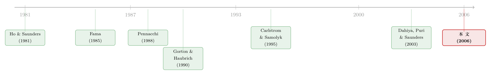

一笔贷款被卖掉之前，借款人先讨回了 20 个基点
本文读的是 Güner (2006, Review of Financial Studies)：当一家银行习惯把放出去的贷款转手卖给别人时，借款人其实是不情愿的——多了一群债主、还可能被市场读出坏消息。于是借款人在签约时就把这份「不情愿」折成价格讨了回来。数据显示，活跃卖贷银行 (active sellers) 放出的贷款，利差比中度卖贷银行 (moderate sellers) 平均低约 20 个基点。便宜的资金成本，确实有一部分顺着这条暗线流到了企业手里。
1 一个被忽略的视角
银行放贷，传统上被看成一件「不可拆分」的事：找到客户、定价、放款、然后把这笔贷款一直扛在自己的资产负债表上，直到收回本息。可过去二三十年里，美国的商业与工业贷款 (commercial and industrial loans, C&I) 二级市场悄悄长大——银行放完款之后，可以把贷款卖掉。
它怎么卖？典型做法是：放贷银行自己留一小块，把其余部分切成若干小份，「参与」(participate) 给好几家别的银行；而原放贷行继续做服务方(servicer)——监督借款人、执行契约、再把现金流转交给买家。换句话说，贷款的「发起」和「融资」这两件事，第一次被分了家。
学术界对这个市场的兴趣，长期集中在两端：银行为什么要卖贷款，以及卖贷款对银行风险有什么影响。可有一个角色几乎被晾在一边——
借款企业自己，到底是赚了还是亏了？
这就是 Güner 这篇文章要钉住的唯一问题。它不去凑热闹谈银行的动机，而是把镜头掉转过来，对准坐在谈判桌另一侧的那家公司。
2 故事的张力：便宜，未必落到你头上
先说银行为什么爱卖。这里有一条经典逻辑，叫比较优势假说(comparative advantage hypothesis)。Pennacchi (1988) 讲得很清楚：把贷款留在表内是有成本的——最低准备金、最低资本充足率、联邦存款保险费，全是「监管税」。把贷款从表内挪走、变成一笔手续费收入，银行的资产回报率和股本回报率都上去了。所以对一家放贷机会多、但资金来源有限的大行来说，把贷款卖出去、在表外融资，边际成本往往比扛在表内更低。
这正好对得上现实里的「卖家画像」与「买家画像」：活跃的卖家通常是分支遍布全球金融中心的大型货币中心银行 (money-center banks)，它们能接触到海量借款人；而典型的买家，则是想增加美国公司贷款敞口、却苦于发起能力不足的外资银行和非银金融机构。一卖一买，双方各取所需。
到这里，一个天真的推论是：既然银行融资成本下降了，借款人是不是也能跟着沾光、付更低的利息？
但真正关键的一步在于——贷款市场并非完全竞争。 贷款利率说到底是一个加成 (markup)：覆盖发起、融资、服务三项成本之后，再加上一块取决于市场势力的「租金」（这套利差分解可以追到 Ho and Saunders (1981)）。既然银行有定价权，那么融资成本的下降，就不会自动变成借款人更低的利率——省下来的钱，完全可能被银行自己留着。
于是问题真正变得有意思了：成本是省了，但省下的钱归谁？
3 反转：借款人手里有一张牌
接着，一个自然的问题是：借款人难道只能被动接受？
作者的洞见是：借款人其实讨厌自己的贷款被卖掉，而且这份「讨厌」是有谈判价值的。为什么讨厌？两个理由。
第一，再谈判会变得很麻烦。 贷款一旦被切成小份卖给一群银行，借款人哪天想修改合同条款——比如陷入财务困境想展期，或者想违反某条契约去做一笔原本被禁止的投资（典型例子：去国外开一家厂）——原放贷行就得挨个去征得所有持有人的同意。对着一群银行讨价还价，比对着一家银行难得多。被迫放弃的投资机会、被拉长的财务困境，都是实打实的成本。
第二，卖贷款这个动作本身会泄露坏消息。 银行被认为是关于借款人的「独家信息生产者」(Fama, 1985)：拿到一笔贷款或续贷，本是利好；可一笔贷款被卖掉，等于把银行手里那点「私下的负面看法」公之于众。Dahiya, Puri, and Saunders (2003) 就发现，贷款出售公告日，借款人的股票会出现显著的负收益。对在意短期股价、薪酬和控制权的管理层来说，这是真痛。
这里有个微妙之处：贷款出售通常发生在放款后不久，借款人质量还没怎么变，加上银行会自留一小块、卖短期份额来克服逆向选择，所以二级市场上的「柠檬折价」其实很小。也就是说，公告的负面信号主要伤的是股东情绪，而不是说这笔贷款真烂了。
把这两点合起来，反转就出现了：既然借款人有理由抗拒，那它在签约时就会要求补偿——「你想保留把我这笔贷款卖出去的权利？可以，但利率得给我降下来。」 于是作者提出核心猜想：一笔「可售的」(saleable) 贷款，会比一笔在其他方面完全等价、却不带出售权的贷款，利率更低。便宜的资金成本，是借款人用一纸「准许出售」的条款换来的。
这个猜想并非凭空。Gorton and Haubrich (1990) 援引过一份 1986 年 2 月的银行放贷实践调查：60 家受访银行里有 10 家承认，为了换取出售贷款的许可，给了借款人更优惠的利率；而在 9 家大型受访银行（也正是卖贷主力）中，这么回答的有 7 家。1987 年 7 月的调查里，这个比例还更高。
4 识别策略：一个绕不开的「替代变量」
猜想要怎么检验？最理想的情况，是我们能看到每一笔贷款的合同里到底有没有「准许出售」条款，或者退一步——这笔贷款最终有没有被卖掉。
可惜，这两样数据都没有。 这是全文识别上最硬的约束，作者的处理方式也成了文章的方法论核心。
他退而求其次，用放贷银行自己的卖贷活跃度，作为「这笔贷款是为出售而发起」之可能性的代理变量。具体地，定义
$$ \mathrm{SALES} = \frac{\text{C\&I loans originated and sold during the year}}{\text{average level of C\&I loans on the balance sheet}} $$
分子来自美国商业银行按季上报给联邦存款保险公司 (FDIC) 的call reports，记录的是当年卖出的 C&I 贷款量（注意它只记被卖掉的那部分，且不含牵头行在银团里「分销」给参与方的份额——它追踪的是真正的二级市场参与）。分母是表内 C&I 贷款的平均存量。这是一个流量比存量的比率，所以 SALES 大于 1 并不奇怪。
把全样本按 SALES 排成十分位 (deciles)，数据自然分出三类银行：不卖的 (nonsellers)、中度卖家、活跃卖家。关键的经验事实是：第 9 与第 10 分位之间，SALES 均值出现一个断崖式跳升——中度卖家 (decile 1–9) 的 SALES 从 0.001 到 1.40，到了顶部分位 (active sellers) 一下跳到 10.0。正是这个天然的断点，让作者能干净地切出「活跃 vs. 中度」，而不必依赖那个本身就很「吵」的卖贷变量的精确数值。
这种集中度有多夸张？顶部分位的 16 家银行，贡献了样本期内约 75% 的卖贷总量；光是前五大卖家（Security Pacific 占 24.8%、Citibank 12.6%、Bankers Trust 12.4%、Chemical Bank 6.3%、Chase Manhattan 5.4%）就占了 61%。
回归设定本身很朴素——普通最小二乘 (OLS)：被解释变量是发行时的利差（all-in-drawn yield，通常以 LIBOR 为基准、单位基点），核心解释变量是一个哑变量 ACTIVE：
$$ \mathrm{Spread}_i = \alpha + \beta\,\mathrm{ACTIVE}_i + \gamma'\,X_i + \varepsilon_i $$
其中 ACTIVE 在贷款由活跃卖家发起时取 1（独家贷款样本里指顶部 SALES 分位的银行；银团样本里指前四个 SALES 分位的银行），\(X_i\) 是一大堆借款人、银行、合同层面的控制变量。作者要看的，就是 \(\beta\) 这个系数的符号——猜想预测它显著为负。
4.1 两道选择性偏误，与一个「帮倒忙」的方向
但这里有个绕不过去的担忧：卖贷银行的借款池，会不会本来质量就更高？
如果是，那利差更低就未必是「出售权折价」，而只是「客户更好」。作者用两层处理来挡这个问题。
第一层，只看会卖贷款的银行。 不卖贷款的多是小型区域行，放贷机会有限、可能够不着优质客户。所以作者干脆把分析聚焦在卖家内部：在独家贷款样本里放一个 SELLER 哑变量；在银团样本里直接剔除不卖家（它们只占 2%）。这样比较的是「活跃卖家 vs. 中度卖家」，两边都是会卖贷款的银行，借款池的系统性差异被压缩了。
第二层，也是全文最精彩的一处自辩——证明这种偏误其实在「帮倒忙」。 按比较优势假说的直觉，活跃卖家放贷机会更好，贷款似乎应该更安全、质量更高，那利差低岂不是被这层质量差异解释了？作者搬出他自己的理论工作 (Güner, 2005) 反驳：银行的信贷筛选技术是有成本的，筛选标准对借款池质量可以是非单调的——当借款人是「好类型」的先验概率太低或太高（想想接近 0 或 1 的情形），筛选的边际收益都抵不上核查的边际成本；只有质量落在中段时，银行才最有动力去筛。于是贷款组合质量可能先升后降：活跃卖家（放贷机会最好、先验概率最高）的贷款组合，质量反而可能低于中度卖家。
这一步的妙处在于：如果活跃卖家的贷款其实更「险」，那它本该要求更高的利差。而数据偏偏显示它更低——这意味着真实的「出售权折价」只会比估计出来的更大。识别偏误的方向，站在了作者这一边。
5 数据与主要结果
数据是三套库手工匹配拼起来的，这在 2006 年是相当费力的活：
- 贷款合同：Loan Pricing Corporation 的
Dealscan，提供发起/到期日、贷款类型与用途、交易规模、定价等细节； - 借款人：
CRSP与COMPUSTAT（仅限上市公司），并用 SIC 行业码和资产规模做一道交叉核对； - 银行卖贷量：FDIC 的
call reports。
Dealscan 从 1987 年起，call reports 的卖贷变量到 1993 年止，于是样本期定为 1987–1993。初始下载有 4942 笔独家贷款 (sole-lender) 和 7890 笔银团贷款 (syndicated) 便利额度；匹配后，两个子样本各约 1500 笔 facilities。作者坚持把独家贷款和银团贷款分开跑——因为两者在借款人和合同特征上差异巨大：独家贷款是「传统」银行贷款（借款人更小、期限更短、有评级的更少），而银团贷款放给更透明的公司，更像公开债。
这条「不透明 → 银行贷款 / 透明 → 公开债」的分界，本身就是公司金融的一条经典暗线。关于企业为什么主动选择更不透明的银行融资，可参见《借公开债，是为了躲开银行的眼睛》。
核心结果落地得很干净：在控制了借款人、银行、合同特征之后，活跃卖家发放的贷款，发行利差比中度卖家平均每年低约 20 个基点。这个量级支撑了那条主线——银行通过出售融资省下的成本，确实有一部分以更低的贷款价格传给了借款人。
作者也很克制地补了一句：单看这 20 个基点，还不足以断言借款人净赚。因为前面说过，出售对借款人有那两条实打实的坏处（多债主、坏信号）。20 个基点是「价格上的让步」，但它到底有没有完全补偿掉那些隐性成本，文章没有、也无法回答。这份诚实，恰恰是它可信的地方。
6 文献脉络
把这篇文章放回它生长的那条线上，会看得更清楚。
最上游，是关于「银行有什么特别」的追问。Fama (1985) 提出银行是独家的信息生产者——这为后来「贷款出售泄露坏消息」埋下了伏笔。差不多同期，Ho and Saunders (1981) 把银行利差拆成成本加成与市场势力的租金，给「成本下降未必传导到借款人」提供了理论支点。

接着，贷款出售这件事本身被搬上台面。Pennacchi (1988) 的比较优势假说是奠基之作：监管成本与放贷机会的差异，催生了贷款的二级市场；Carlstrom and Samolyk (1995) 进一步把它刻画为对市场化资本约束的回应。Gorton and Haubrich (1990) 则系统描述了这个市场的形态，并第一次记录了「活跃卖家 vs. 中度卖家」的区分——本文的 ACTIVE 切法正是接着它走的。Berger and Udell (1993)、Demsetz (1993, 2000) 这一支，则在实证上反复验证了比较优势这套动机。
然后，研究开始问「卖贷对谁有影响」。早期答案几乎都指向银行风险那一端。直到 Dahiya, Puri, and Saunders (2003) 把视线第一次拉到借款人身上——发现出售公告会砸借款人的股价。
而本文 (Güner, 2006) 站的位置，正是把这条线推到最后一公里：不是问银行的动机、也不只是看公告日的股价反应，而是直接量出——在贷款定价这个最根本的地方，借款人对「可售性」的厌恶，到底值多少钱。答案是大约 20 个基点。
7 评论与延伸（Q&A + 研究方向）
(a) 几个可能的疑问
Q：用银行的整体卖贷活跃度，去代理「单笔贷款是否为出售而发起」，这个跳跃靠谱吗？
这是全文最大的软肋，作者自己也承认。SALES 是个银行-年层面的「吵」变量，它假设活跃卖家的某一笔贷款更可能带出售权。好处是用了 decile 9→10 的天然断点、只比较哑变量而非连续值，降低了对精确数值的依赖；但本质上仍是生态推断——单笔贷款实际有没有被卖、有没有出售条款，依旧看不见。结论是「平均意义上成立」，不是逐笔的因果。
Q：20 个基点，会不会只是「活跃卖家客户更好」的伪装？
作者用了两道防线：一是只在卖家内部比较（剔除/控制不卖家），二是用 Güner (2005) 的非单调筛选论证，说明活跃卖家的贷款可能反而更险，从而偏误方向是低估折价而非高估。逻辑链是自洽的，但第二道防线依赖一个理论模型的成立，属于「论证」而非「证据」，读者信不信见仁见智。
Q：独家贷款和银团贷款为什么不能放一起？
因为两者几乎是两个物种：独家贷款借款人更小、期限更短、评级更少，是「传统」银行贷款；银团贷款给更透明的大公司，更像公开债。合并会让控制变量的解释力混乱，所以全程分样本估计——这也是为什么银团样本里
ACTIVE用了「前四个分位」而非「顶部分位」这个看似随意的阈值（因为独家样本顶部分位的 16 家大行，正分散在银团样本的前四分位里）。
Q：既然出售对借款人有坏处，为什么借款人不干脆拒绝签出售条款？
因为那样它就拿不到这 20 个基点的折价了。这恰恰是文章的均衡逻辑：借款人不是无脑反对，而是在「我讨厌被卖」和「便宜的利率」之间做权衡，最后用条款换价格。能签下来，说明对一部分借款人而言，价格补偿是划算的。
Q：这 20 个基点能说明借款人「净赚」了吗？
不能，作者特别强调了这一点。20 个基点只是价格端的让步，没有计入多债主带来的再谈判成本、以及出售公告砸股价的隐性成本。它证明的是「成本下降确有传导」，而不是「借款人因此获益」。把这两件事分开，是这篇文章值得学的克制。
Q：1987–1993 这个样本，放到今天还成立吗？
要谨慎。那是二级市场刚起步、且基本是「无追索权」(no recourse) 出售的年代。如今 CLO、贷款交易平台、信息披露都成熟得多，借款人对「被卖」的厌恶程度、以及信息泄露的强度，都可能变了。结论的方向也许还在，量级未必。
(b) 几个可能的研究问题与提案
1. 把代理变量换成「真出售」——用现代贷款交易数据重做。 【经济故事】本文最大的遗憾是看不见单笔贷款是否被卖、是否带出售条款。如今 LSTA/二级交易数据、以及部分合同文本能直接观测「可售性」与实际出售。若能用真出售事件替代 SALES 代理，就能把「平均生态推断」升级为更接近逐笔的识别。 【可行性】中。数据存在但贵且零碎，合同条款的可售性需文本挖掘；识别上仍要处理「哪些贷款被选去卖」的内生性，可考虑用买方需求冲击做工具变量。
2. 把视角搬到公司债与外资买家。 【经济故事】本文的「卖家是大行、买家是外资行与非银」这一画像，天然连到信用市场里「谁持有」决定「价格」的主题。如果把对象换成公司债的一级发行——发行人是否会因为「这只债更可能流向某类投资者（如外资）」而要求或获得定价让步？这把「持有人结构 → 定价」的逻辑从贷款搬到债券。 【可行性】中。需要发行时的预期持有人结构（难），可用 TRACE 二级成交+13F/保险公司持仓近似。可参见《谁在持有这张债券，决定了它的价格》 与《一笔贷款长成什么样，取决于『未来谁来接盘』》 的思路。
3. 出售公告的负向股价反应，是否也定价进了利差？ 【经济故事】Dahiya et al. (2003) 测的是公告日股价，Güner 测的是发行时利差，两者其实是同一份「厌恶」的两端。能不能在同一样本里把「公告反应的强度」和「发行时折价的大小」对上——厌恶越强的借款人，事前讨回的折价是否越大？ 【可行性】中偏低。要同时观测同一批借款人的事前定价与事后公告反应，样本会很小，但内部一致性检验非常有说服力。
4. 非单调筛选假说的直接检验。 【经济故事】Güner (2005) 那条「活跃卖家贷款反而更险」的论证是全文识别的关键支柱，但本文只给了间接证据。能否用事后违约率、评级迁移直接验证：贷款组合质量是否真的随银行放贷机会先升后降？ 【可行性】高。call reports + 违约数据 + 放贷机会代理（如分行网络、地区经济）即可构造，是个相对干净、可独立成文的检验。
(c) 我的判断
这篇文章的贡献，在于它换了一个被忽略的视角，并且把一个看似软绵绵的行为假说（借款人讨厌被卖）钉成了一个可检验、且方向明确的价格预测，最后干净地量出 20 个基点。更难得的是它的克制：明知数据不允许，就不去宣称「借款人净赚」，而是老老实实停在「成本有传导」这一步。那段「选择性偏误其实帮倒忙」的自辩，是方法论上的高光。
担忧也很集中，且都绕着同一个根：代理变量。用银行整体卖贷率去代理单笔贷款的可售性，是一次很大的跳跃；20 个基点究竟是「出售权折价」，还是「活跃卖家与中度卖家之间某种未被控制的系统差异」，本文给的是有力的论证，而非无懈可击的证据。再加上 1987–1993 这个早期、无追索权为主的样本，外推到今天的杠杆贷款与 CLO 世界要打折扣。
我最想看到的后续，是有人拿现代能直接观测「实际出售 / 出售条款」的数据，把这个 20 个基点重新估一遍——既验证方向，也校准量级；并顺手把它接到公司债与外资持有人那条线上去。如果那时折价还在，这篇二十年前的小文章，就真的押对了一条到今天还在流淌的暗线。
参考文献
- Berger, A. N., and G. F. Udell (1993). Securitization, Loan Sales, and the Liquidity Problem in Banking. In M. Klausner and L. J. White (eds), Structural Changes in Banking, 227–291. Irwin, Homewood, IL.
- Carlstrom, C., and K. Samolyk (1995). Loan Sales as a Response to Market-Based Capital Constraints. Journal of Banking and Finance 19, 627–646.
- Dahiya, S., M. Puri, and A. Saunders (2003). Bank Borrowers and Loan Sales: New Evidence on the Uniqueness of Bank Loans. Journal of Business 76(4), 563–582.
- Demsetz, R. (2000). Bank Loan Sales: A New Look at the Motivations for Secondary Market Activity. Journal of Financial Research 23, 192–222.
- Fama, E. (1985). What's Different about Banks? Journal of Monetary Economics 15, 29–39.
- Gorton, G. B., and J. G. Haubrich (1990). The Loan Sales Market. In G. G. Kaufman (ed.), Research in Financial Services, Vol. 2, 85–135.
- Güner, A. B. (2005). Lending Opportunities, Credit Standards, and Loan Sales. Working Paper, Barclays Global Investors, San Francisco.
- Güner, A. B. (2006). Loan Sales and the Cost of Corporate Borrowing. Review of Financial Studies 19(2), 687–716.
- Ho, T. S. Y., and A. Saunders (1981). The Determinants of Bank Interest Margins: Theory and Empirical Evidence. Journal of Financial and Quantitative Analysis 16, 581–600.
- Pennacchi, G. (1988). Loan Sales and the Cost of Bank Capital. Journal of Finance 43, 375–396.